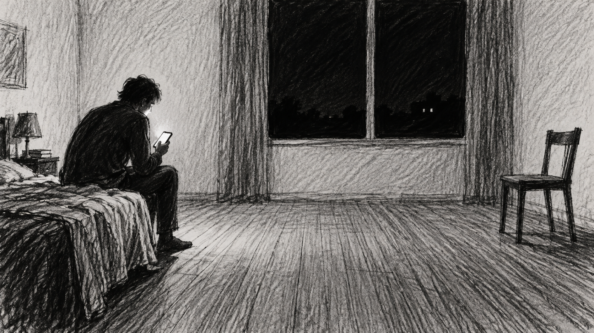
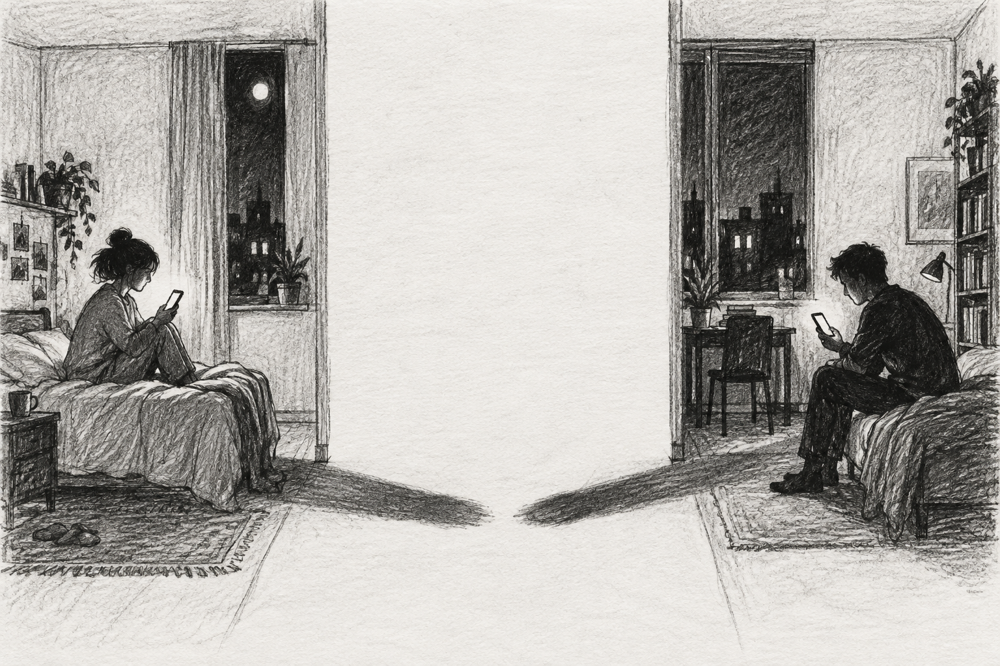
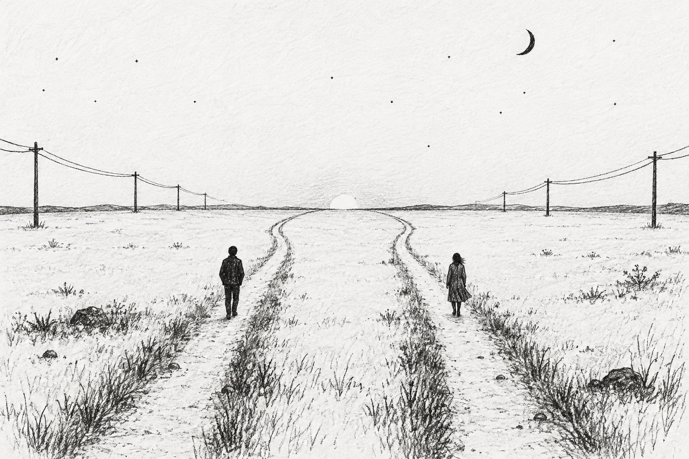

Poetry / three conversations
Parallelism.
A phone lights up. Then it lights up again.

Two voices, separated by what they say and what they cannot ask.
1:00 AM
The phone lights up
Hey
Hey
How are you?
I was in bed, just about to go to sleep.
Oh, ok.
No, no, tell me, how was your weekend?
It was good. I mean, yes, it was good.
I am happy for you!
And yours?
You know, same old.
Are you ok?
Are you?
Maybe.
What happened?
I …
Yes?
I was with him.
Oh.
I … are you sure?
Not sure, are you ok?
Ok, nevermind.
…
She:
I read your writings
Oh!
…
Is it me?
How would the answer to this change anything?
You seem rather… restrained. Are you sure you want to talk?
Yes, I want to.
…
Why are you single?
The skills needed to succeed in attracting women are different from the ones you need to maintain a relationship
I don’t understand
I mean, it’s hard to get rid of the persona you built around yourself thus you tend to stick to it.
And?
At one point you realize that it is all empty but can’t escape it. It makes the connection impossible.
Is this what happened to you?
…
I am sorry, I didn’t mean.
No problem.
Why you don’t ask anything about me?
I can’t.
…
She:
I want to have children.
…
Age?
Yes, and I want to dedicate my life to someone, someone I love unconditionally. Why didn’t you have children ?
I am thinking. It is very easy to have children, You just have sex without condom. And then they appear.
But?
You need both of you to abandon yourselves to the act. Like she really wants to have your children and you really want her to have your children and then you just forget about protection.
Forget?
Yes, forget. Abandon. Not fake it. Just truly forget.
And what happened?
Maybe you can, as a woman, have children just for you and they to become the full focus of your affection. I can only dedicate myself to her, fully.
I understand. I am sorry.
…
It’s late, maybe we should sleep.
Maybe we should.
…
Are you still there?
Yes.
Sleep well.
Sleep well.
12:00 AM
His phone lits up again.

Hey
Hey
I am sorry about yesterday, I didn’t mean to be indiscreet.
You weren’t. I answered honestly. It felt good.
…
You still don’t ask me about my day.
I can’t.
What are you afraid of?
Friendship
Between you and me?
Yes.
…
Do you date anyone?
Yes, I go on dates.
I see. How is she?
It’s … nothing serious. Going out, having a drink, gym.
Are you happy?
I am filling my days. I don’t really want to talk about it.
…
Do you speak with anyone else right now?
No.
I wish you told me something more about yourself.
…
It’s hard ignoring elephant in the room.
?
I love you. I don’t want to be your friend.
I…
This is why it is so weird. I need to hold on to something, so I choose to only focus on what I can control. I need to box myself or I lose myself. You ask me to ask you questions. I can’t ask you questions or I will fall apart. And yes, my writings are about you. Does this change anything?
No, it doesn’t. And it does, at the same time, change everything.
Let’s just sleep.
Let’s.
…
She:
Would you have children with me?
Yes.
12:00 AM
Bling!
Hey
Hey
I am sorry about yesterday. I got carried away.
No, nothing to be sorry about. And thank you for today. We had a good day.
Yes, we did. Focus on what matters. Thank you! I appreciate it.
…
Hey, still there?
Yes, still here.
How do you know you love me?
It’s the feeling - you lift me up when you look into my eyes. It’s like… you see inside and I want to lift myself to be worthy of what you see in me. It’s not just you understanding me and accepting me, who I am. If anything, it’s precisely the opposite: you not simply accepting me but telling me “you can be more”. It’s… it’s me conquering the world for you.
Will you be there when all this is over?
I don’t know. Life is strange. Things happen. Random.
Do you think it was never meant to be?
I think it is what we make it to be ourselves. I think… it matters less.
I guess you are right.
Bye.
Bye.

End of poem
Back to the beginning